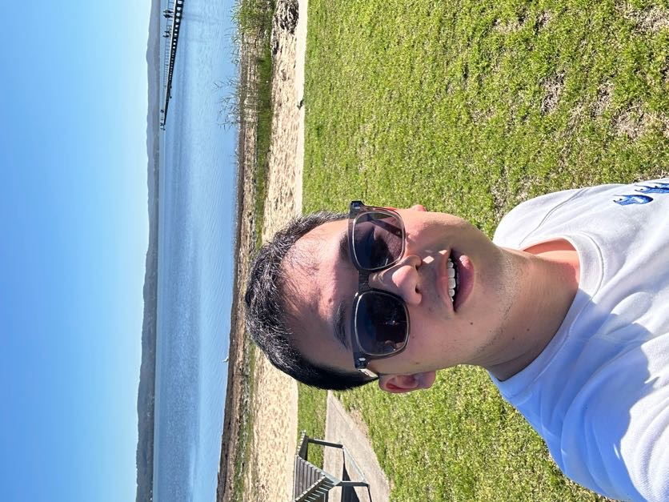

I am a Ph.D. candidate at the University of New South Wales, working in the field of continuum robotics, supervised by Professor Leo Wu. My Ph.D. is supported by the UNSW TFS Scholarship.
I received my Master of Information Technology from UNSW, where I worked on my thesis with Professor Scott Sisson, Dr. Boris Beranger, and Dr. Peng Zhong. I received my B.E. from Hangzhou Dianzi University, supervised by Professor Chunshan Liu.
Goal: Intelligent medical robotic systems that assist and improve people's lives.
Research Interest: Robotics and mathematics.
Research Question: How can we build scalable learning frameworks that transfer reliably from simulation to real medical robots operating in unstructured, in-body environments?
Email: haitao.gao [AT] unsw.edu.au